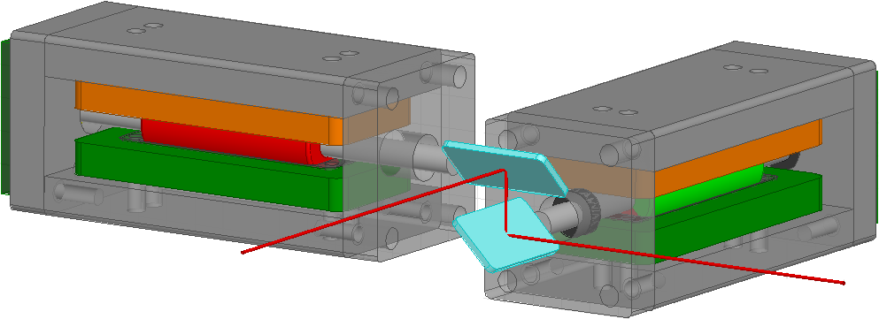
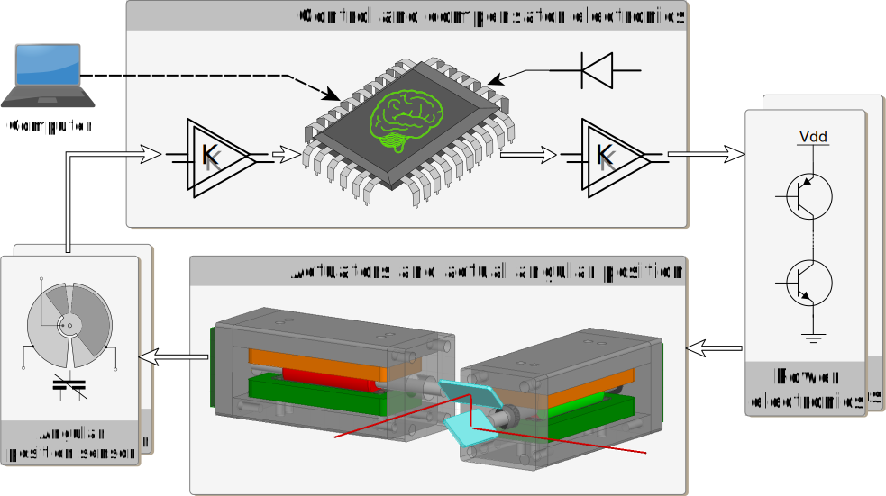

Title: Projekt Galvo-Scanner
Author: Del Basso, Manuel
WHZ
Date: November, 2016
Projekt Galvo-Scanner
===========================
[TOC]
Einleitung
Im Rahmen der hier vorgestellten Projektarbeit wurde über einen Zeitraum von ca. 12 Monaten ein System entworfen und aufgebaut, bei dem der Projekt-Schwerpunkt bewusst nicht auf ein einzelnes Teilgebiet des Studiengangs "Nachrichtentechnik – Informationstechnik" beschränkt werden sollte. Die praxisbezogenen Kursinhalte und Laborveranstaltungen des Grundstudiums, vertiefen die erlernten theoretischen Grundlagen und zeigen teilweise auch Methoden zur (Computer-)Modellbildung und/oder Simulation im jeweiligen Teilgebiet auf.
- Analog-/Digitaltechnik
- Felder-Theorie (magnetische / elektrische)
- Wechselstromlehre
- Mikrocontroller-Technik
- Hardwarebeschreibung (VHDL)
- Simulation von elektrischen Netzwerken (SPICE)
- abstrakten Systembeschreibung (Laplace, Fourier)
- Regelungstechnik
- Diskretisierung von Systemen
Einige konkreFür die Umsetzung eines Systemplanung wie auch für die spätere Umsetzung als grundlegend und unerlässlich angesehen wird. Einige öffentliche Vorträge zum Thema "System Konzeption und Beschreibung in der Praxis" wurden am Karlsruher Institut für Technologie (KIT, Universität Karlsruhe) besucht. Dadurch konnten ergänzende Inhalte zum HsKA-Modul "Embedded Systems" erarbeitet und teils auch bei der konkreten Teilsystem-Auslegung umgesetzt werden.
Vorarbeit
Es folgen einige Worte zur Frage "Wie kam es zu dem Projekt?" und "Was wurde letztendlich Umgesetzt?". Das ursprüngliche Projektvorhaben wurde nur teilweise umgesetzt, soll aber hier der Vollständigkeit halber erwähnt werden.
Ursprüngliche Motivation
Der Besuch einer mehrtägigen Schulungsveranstaltung der Firma ANSYS[^fnWikiAnsys] mit Schwerpunkt ANSYS Maxwell[^fnMaxwell] sowie ANSYS Simplorer[^fnSimplorer] im Rahmen meiner Formula Student Mitgliedschaft, weckte das Interesse an einem Projekt im Bereich "Multiphysik und Systemsimulation". Der nachfolgende Abschnitt "Projektziel" wurde der ursprünglichen Projektanfrage entnommen. Weitere Details sowie erste Simulationsergebnisse (Maxwell FEM-Modell + Simplorer Regelkreis), können in der ursprünglichen Projektanfrage[^fnAnfrageBrunner] eingesehen werden.
Ziel des Projektes ist der Aufbau eines funktionsfähigen XY-Galvanometer-Scanners mit selbstentworfenen Galvanometer-Motoren + Leistungstreiber und eines in C implementierten Software-Reglers (...). Als Galvanometer-Motor-Typ ist ein "Moving magnet motor" geplant. Um die Motorkonstruktion einfach zu halten, ist ein Stator Design mit nur einem Polpaar angedacht.
Unter Zuhilfenahme der FEM-Simulationsumgebung "Maxwell" und "Simplorer", sollen Reglerparameter anhand eines nichtlinearen Modells des Galvanometer-Motors optimiert werden. Die Sollwert-Vorgaben für die XY-Winkelpositionen werden vorerst als einfache Lookup-Tabellen direkt auf dem Mikrocontroller erzeugt, welcher auch die diskreten Reglerfunktionen übernehmen soll.
Sollte das geplante System soweit funktionieren, dass mit dem Scanner einfache geometrische Figuren erzeugt werden können (Kreise, Quadrate, Achter, ...), könnte eine PC-Software zur Erzeugung von Pixelkoordinaten inkl. Dunkeltastung des Lasers als Erweiterung angedacht werden.

Statische sowie dynamische Eigenschaften der in ANSYS Maxwell konstruierten Aktoren werden auf Basis finiter Elemente modelliert und in ei nem Multi-Domain-Modell[^fnMultiDomain] abgebildet.
Fertigungsproblematik
Die Motorkonstruktion konnte nie vollständig an einem funktionsfähigen Prototypen getestet werden. Hierzu werden folgende Begründungen genannt:
- Unzureichende dynamische Eigenschaften (Rotormasse, Stabmagnet)
- Kostenintensive / nicht vor Ort durchführbare mechanische Fertigungsschritte
- Bearbeitung des Neodym Materials (Rotormagnet) nicht umsetzbar
- Bearbeitung des aus Ferrit Pulver gepressten Statorkerns schwer umsetzbar
- Verfügbarkeit ungenutzter, professioneller Galvanometer-Motoren
Das "unzureichend" bezieht sich auf das in Abschnitt Error: Reference source not found (Zitat, letzter Abschnitt) formulierte Projektziel. Um die dynamischen Eigenschaften zu verbessern, wäre die mechanische Bearbeitung von Zukaufteilen notwendig gewesen. Nach einigen gemeinsamen Recherchen mit den Werkzeug-Spezialisten des ansässigen Instituts für Materialien und Prozesse (IMP), wurde von einer maschinellen Bearbeitung abgeraten.[^fnArnoldMagn]
Industriell gefertigte Aktoren
Für die weitere Umsetzung des Projekts kamen gebrauchte Spiegel-Galvanometer der Firma "Cambridge Technology Inc." zum Einsatz. Da keine herstellerspezifischen Informationen über den mechanischen Aufbau der Cambridge Galvanometer zur Verfügung standen, konnte die in Abschnitt Ursprünglich Motivation sowie die in [brun1] beschriebene Multi-Domain-Softwarelösung im weiteren Projektverlauf nicht mehr eingesetzt werden.
Eine zerstörungsfreie Demontage der vorhanden Aktoren konnte nicht gewährleistet werden. Außerdem ließe der innere mechanische Aufbau keine Rückschlüsse auf die wichtigen Materialeigenschaften des Rotors bzw. Statorkerns zu.
Durch eine sorgfältige Strukturierung des Projektablaufs hätte u. U. Zeit gespart werden können. Die erarbeiteten Kenntnisse im Bereich "Multiphysik und Systemsimulation" sind keines falls umsonst gewesen. Hinsichtlich der produktiven Bearbeitung von Projekten, lässt der bisherige Ablauf jedoch viel Kritik zu. Fertigungsprozesse unterliegen grundsätzlich irgend welchen Einschränkungen. Bereits während der Recherche zum Thema Permanentmagnet, wäre eine Anfrage über die Bearbeitbarkeit notwendig gewesen!
Terminologie
Auf häufig wiederkehrende Begriffe wie z. B. Modell, Modellbildung oder System, soll hier kurz eingegangen werden da sie als Überbegriffe sehr universell definiert sein können.
Galvanometer*
Ein Galvanometer-Scanner ist ein hochdynamisches elektro-optisches Bauteil, bei dem ein drehbare Spiegel von geringer Trägheit verwendet werden, um einen Laserstrahl mit hoher Genauigkeit und Wiederholbarkeit zu positionieren. Der Name Galvanometer bezieht sich auf den Motor-Typ.[^fnGalvoScanlab]
System
Es gibt sehr abstrakte Definitionen des System-Begriffs. Auch in der soziologischen Systemtheorie werden System-Begriffe formuliert so dass z.B. durch menschliche Handlungen ein abstraktes Modell eines sozialen Systems angeregt bzw. dessen Systemantwort beschrieben werden kann. Eine sehr universelle Definition lautet z. B.:
"System: a set of physical entities that interact and are observable, where the entities can be a specified quantity of matter or a volume in space." [^fnChRoy]
Eine Menge von physikalischen Einheiten die interagieren und beobachtbar sind, wobei sie eine definierte Menge Materie (bzw. eine bestimmte Anzahl an Teilchen) oder ein physischer Körper im Raum sein können.
Im folgenden "beschränken" wir uns auf den System-Begriff im Sinne der Systemtheorie als elementare Disziplin der Ingenieurswissenschaften. Systeme und Signale sind die beiden wichtigsten Konzepte der Systemtheorie. In der Praxis werden Gebilde oder Konstrukte als System bezeichnet, die bei Anregung mit einem Eingangssignal x(t) mit einem Ausgangssignal y(t) reagieren.[^fnRUnb]
Ein Gesamtsystem fügt sich aus Teilsystemen zusammen. Je nach Komplexität der übergeordneten Aufgabe (Wie "dick" sind Pflichten- und Lasten- Heft?) entstehen zahlreiche Abstraktionsebenen die es zu dokumentieren und meist auch zu warten gilt.
Hinsichtlich eines Software-Systems wird der Begriff System in der IEEE 1471 wie folgt definiert:
Ein System ist ein aus Teilen zusammengesetztes und strukturiertes Ganzes. Es hat eine Funktion, erfüllt einen Zweck und verfügt über eine Architektur. [MDA:2006, S.57]
Modell
Um ein Modell beschreiben zu können, muss zuvor das System gewählt werden, dessen tatsächliche Eigenschaften über den Prozess der Modellbildung abstrahiert werden soll. Auch für den Begriff Modell finden sich zahlreiche Definitionen in der Literatur. Einige eignen sich sehr gut zur Definition im Sinne technischer Zusammenhänge und Computersimulationen Einige werden im folgenden zitiert:
Die Grundlagen der Modellierung schuf Herbert Stachowiak 1973 mit der Veröffentlichung der "Allgemeinen Modelltheorie". Demnach ist ein Modell durch Abbildung, Verkürzung und Pragmatismus gekennzeichnet.[^fnStachowiak]
Abbildung
Ein Modell ist stets ein Modell von etwas – nämlich Abbildung oder Repräsentation eines natürlichen oder eines künstlichen Originals, wobei dieses Original selbst auch wiederum ein Modell sein kann.
Verkürzung
Ein Modell erfasst im Allgemeinen nicht alle Attribute des Originals, sondern nur diejenigen, die dem Modellschaffer bzw. Modellnutzer relevant erscheinen.
Pragmatismus
Modelle sind ihren Originalen nicht eindeutig zugeordnet. Sie erfüllen ihre Ersetzungsfunktion für
- bestimmte Subjekte (für wen?)
- innerhalb bestimmter Zeitintervalle (wann?)
- unter Einschränkung auf bestimmte gedankliche oder tätliche Operationen (wozu?).
Eine kompaktere Definition wurde einem Lehrbuch "Grund- und Leistungskurs Informatik" von Karl-Hermann Rollke und Klaus Sennholz entnommen:
Ein Modell ist ein durch Abstraktion (Reduzierung und Verallgemeinerung) gewonnenes Abbild eines bestimmten Ausschnitts der Realität. Das Modell wird zu dem Zweck entworfen, den für die Lösung eines bestimmten Problems relevanten Teil der Wirklichkeit für den Menschen oder eine Maschine (Computer) überschaubar und operationalisierbar zu machen.[^fnRoSe]
...ist es wichtig, den Systemgrad minimal zu halten.
Die folgende Beispielaufgabe soll diesen Zusammenhang etwas greifbarer darstellen:
Beispiel
Für eine analoge Filterschaltung wird ein mathematisches Modell gefordert. Die Schaltung soll zur Tiefpassfilterung in einer Highend-HiFi Stereoanlage eingesetzt werden. Für den Übergang vom Durchlass- in den Sperrbereich ist eine Dämpfung von 20dB/Dekade vorgegeben. Anhand des Modells soll das Dämpfungsverhalten mittels einiger harmonischer Testsignale untersucht werden können.
Möglichkeit 1
 Man leitet aus den Anforderungen ab, dass ein Standard Filter mit Tiefpasscharakter 1. Ordnung gefordert ist. Da es sich beim Endprodukt um eine Highend-Anlage handelt, sollte ein möglichst präzises Modell formuliert werden. Unter Berücksichtigung aller tatsächlich parasitärer Größen von passiven Bauelementen[^fnElektrBauelem] wie Serieninduktivität (ESL) und Serienwiderstände (ESR) der Anschlussdrähte/Anordnung der Elektroden, der Isolationswiderstände und der dielektrischen Absorption (Nachladeeffekt, Rda, Cda), ergibt sich für einen einfachen RC-Tiefpass mit einer Dämpfungsflanke von 20dB/Dekade, das nebenstehende Schaltbild. Da die Ordnung eines Systems direkt aus der Anzahl seiner unabhängigen Energiespeicher abgeleitet werden kann, muss dem geforderten mathematischen Modell eine Differentialgleichung 5. Ordnung!!! zugrunde gelegt werden.
Man leitet aus den Anforderungen ab, dass ein Standard Filter mit Tiefpasscharakter 1. Ordnung gefordert ist. Da es sich beim Endprodukt um eine Highend-Anlage handelt, sollte ein möglichst präzises Modell formuliert werden. Unter Berücksichtigung aller tatsächlich parasitärer Größen von passiven Bauelementen[^fnElektrBauelem] wie Serieninduktivität (ESL) und Serienwiderstände (ESR) der Anschlussdrähte/Anordnung der Elektroden, der Isolationswiderstände und der dielektrischen Absorption (Nachladeeffekt, Rda, Cda), ergibt sich für einen einfachen RC-Tiefpass mit einer Dämpfungsflanke von 20dB/Dekade, das nebenstehende Schaltbild. Da die Ordnung eines Systems direkt aus der Anzahl seiner unabhängigen Energiespeicher abgeleitet werden kann, muss dem geforderten mathematischen Modell eine Differentialgleichung 5. Ordnung!!! zugrunde gelegt werden.
Möglichkeit 2
... dgl der Ordnung 1....
Ein formuliertes Modell unterliegt also der Anforderung, möglichst alle relevanten Charakteristika eines Systems abzubilden wobei der Systemgrad minimal gehalten werden soll. So gelingt es, komplexe Zusammenhänge aufzuspalten und eine Problemstellung zu partitionieren.
Modellbildung
Top-Down- und Bottom-Up-Design
In der Informatik bezeichnet man einen Entwicklungsprozess für Software als Top-down, wenn der Entwurf mit abstrahierten Objekten beginnt, die dann konkretisiert werden; der Prozess ist Bottom-up, wenn von einzelnen Detail-Aufgaben ausgegangen wird, die zur Erledigung übergeordneter Prozesse benötigt werden. Zudem wird im Zusammenhang mit Compilerbau von Top-down- und Bottom-up-Parsern gesprochen (genauere Informationen unter Top-Down- und Bottom-Up-Design).
Modellbildung
Klassifikation von Modellen hinsichtlich ihrer Repräsentation:
...
Modell
mentales Modell physikal. Modell
analoges Modell
Darstellungsmodell
symbol. Modell
mathemat. Modell
grafisches Modell
verbales Modell
...
Unter Modellbildung (Modellierung) versteht man den Prozess, von einem System
ein Modell zu erstellen. Hierzu gehören folgende Schritte:
1. Identifizierung der Systemgrenzen ❀ Black-Box-Modell
2. Identifizierung der Untersysteme und ihrer Beziehungen ❀ Strukturmodell
3. Definition von Relationen zwischen Variablen ❀ Verhaltensmodell
MK:III-21 Modeling Concepts © STEIN 2000-2015
Modellbildung
Ablauf der Top-Down-Modellbildung: Abstrakte Modelle werden auf weniger
abstrakte Modelle abgebildet.
mentales Modell
Strukturmodell
algorithm. Modell
Computermodell
Verhaltensmodell
System + Frage
Interpretation des
konkreteren Modells
Basis des abstrakteren.
hohe Abstraktion
niedrige Abstra
Prozesse der Modellbildung: wiki
Ablauf einer Modellbildung
Bei der Modellbildung lassen sich folgende Prozesse differenzieren:
Abgrenzung: Nichtberücksichtigung irrelevanter Objekte
Reduktion: Weglassen von Objektdetails
Dekomposition: Zerlegung, Auflösung in einzelne Segmente
Aggregation: Vereinigung, Zusammenfassen von Segmenten zu einem Ganzen
Abstraktion: Begriffs- bzw. Klassenbildung
Die enormen Anforderungen, die aus Anwendersicht an Hard- und Softwarekomponenten gestellt werden, in Verbindung mit dem Aspekt der Wirtschaftlichkeit, machen sich bereits in der Projektierungsphase eines Auftrags bemerkbar. "Reusability" ist ein Begriff aus der Softwarearchitektur und charakterisiert Software (Quellcode, Dokumentation, Testumgebungen, ...) bezüglich ihrer Wiederverwertbarkeit in Folgeprojekten oder Folgeschritten des selben Projektes.^fnReuseCode] Um einen Schritt weiter in Richtung modellgetriebene Architektur (engl. Model Driven Architecture, MDA) zu gehen, soll an dieser Stelle ein Unterpunkt aus [[MDA:2006, 17], Kapitel "Akute Probleme bei der Software-Erstellung", zitiert werden:
Äußere und innere Gleichförmigkeit von Projekten
Zwar impliziert ein Projekt immer einen neuartigen und einmaligen Charakter, oftmals werden aber mehrere Projekte in der gleichen Fach- und/oder Technikdomäne durchgeführt. Genau so oft ähneln oder gleichen sich daher die (architekturellen) Konzepte der realisierten Anwendungen. Diese Gleichförmigkeit wird häufig übersehen oder schlicht ignoriert und anstatt diese domänen-spezifischen Konzepte wiederverwendbar zu machen, wird die gleiche Arbeit unnötigerweise mehrfach verrichtet.
Natürlich ist der Begriff der Wiederverwertbarkeit nicht nur auf Komponenten einer Softwarearchitektur beschränkt. Auch im Hardwarebereich kann ein Unternehmen durch frühzeitig eingeleitete Abstraktionsprozesse, u. U. eine Gleichförmigkeit zu geplanten Folgeprojekten erkennen und das Teilsystem "von Heute" bereits zugunsten des Teilsystems "von Morgen" optimieren.
Projektziel
Als übergeordnetes Projektziel soll ein optisches Ablenksystem (2-Achsen → XY-Koordinaten) für eine Laserquelle (Laserpointer, sichtbares Spektrum) auf Basis industriell gefertigter Spiegelgalvanometer geplant, simuliert, entworfen, aufgebaut und verifiziert werden. Die Aktoren (Spiegelgalvanometer der Firma Cambridge) sind als gegeben zu betrachten (Zukaufteil).  Die Positionierung des Laserpunktes soll hinreichend "schnell" und "präzise" sein so dass zumindest einfache geometrische Figuren auf einen hellen Hintergrund projiziert werden können. Die Regelung der Aktoren soll diskret realisiert und auf einem Mikrocontroller STM32F429i implementiert werden. Die Pixel-Koordinaten (Sollwerte) werden im Speicher des STM32 abgelegt und sollen über eine PC-Schnittstelle aktualisiert werden können.
Die Positionierung des Laserpunktes soll hinreichend "schnell" und "präzise" sein so dass zumindest einfache geometrische Figuren auf einen hellen Hintergrund projiziert werden können. Die Regelung der Aktoren soll diskret realisiert und auf einem Mikrocontroller STM32F429i implementiert werden. Die Pixel-Koordinaten (Sollwerte) werden im Speicher des STM32 abgelegt und sollen über eine PC-Schnittstelle aktualisiert werden können.
Im nächsten Kapitel folgt eine erste Aufteilung des Projekts "XY-Galvanometer-Scanner":
Modellbildungsprozess
"It's a bunch of shapes connected by lines." Dilbert
[MDA:2006, S.73]
Dieser Aussage entsprechend soll hier aus dem formellen Anforderungskatalog (vergl. Pflichtenheft) ein erstes abstraktes Modell abgeleitet werden.
- Aktoren
- Sensoren
- Leistungselektronik
- Steuer- und Reglerelektronik
- Mikrocontrollerplatine
- Signalkonditionierung
- Pegelwandlung
- Anti-Aliasing (ADC)
- Rekonstruktionsfilter (DAC)
- Software
- Implementierung der Regelalgorithmen
{:width=600px}
Aktor Modellierung
Um die physikalischen Zusammenhänge eines Drehmoment-Motors (Galvanometer-Prinzip) in ein Computermodell überführen zu können, gibt es mehrere Ansätze. Die Möglichkeit, ein Multiphysik-Modell zu erstellen und einzusetzen, wurde in [#Vorarbeit] angesprochen. Ein anderer, hier genutzter Ansatz wird im folgenden beschrieben.
Generisches Modell
In der Informatik sind generische Typen Datentypen mit der Möglichkeit zur Angabe von Typparametern. Man spricht auch von parametrischer Polymorphie.[^fnwikiGenericTypes] Überträgt man den Begriff generisch auf den hier angesetzten Prozess, so muss als Prozessergebnis ein Modell entstehen dass in der Lage ist, eine ganze Menge von vergleichbaren Aktoren (Drehmoment-Motoren) zu beschreiben. Übergibt man dem generischen Typ "Aktor" oder "Galvanometer" die für das zu erzeugende Modell spezifischen Parameter wie Drehmomentkonstante, Wicklungsinduktivität oder das Massenträgheitsmoment der Rotorwelle, soll ein entsprechendes Objekt erzeugt werden. Mit diesem Modell soll dann das Subsystem Aktor auf einer höheren Abstraktionsebene in ein weiteres Modell eingebunden und simuliert werden können.
Die Analogie zu generic types in objektorientierten Programmiersprachen ist nur teilweise zulässig. Vergleicht man diese Methode jedoch mit der in [#Vorarbeit] aufgezeigten, nämlich einem Computermodell, abhängig von Geometrie und Materialparametern, so finden sich doch einige Eigenschaften, die analog verwendet werden können.
Mathematische Zusammenhänge
Grundlage eines generischen Modells ist seine Mathematik. Die Gesetze der Physik müssen bei der mathematischen Modellierung eingehalten werden. Der Verlauf der Geschwindigkeit v(t) eines Körpers lässt sich z. B. durch Differentiation seiner Streckenfunktion s(t) oder durch Integration seiner Beschleunigung a(t) über der Zeit formulieren. Diese Gesetzmäßigkeiten gelten gleichermaßen für translatorische sowie rotatorische Bewegung. Daraus folgt, dass z. B. die Integralbildung der Winkelgeschwindigkeit ω(t) eines rotierenden Körpers unmittelbar auf seine Winkelposition φ(t) führt. Diese grundlegenden Gesetze müssen später anhand des Modells verifiziert werden können.
KonkretAngabezuSystemdynamik
geschlosseneModell
Simulation
SpezifikationedeGesamtsystem
UntergeordneteProjektziel
ModellierununSimulation
Gesamtsystem
Modellbildung
ModellbildundeTeilsysteme
Hardware
Software
ModellbildunAktor
UmsetzuniMATLAB/Simulink
VerifizierundeModellmöglich?
Modellparametebestimmeuntesten
Schwerpunkt
Maths
$$F(\omega) = \frac{1}{\sqrt{2\pi}} \int_{-\infty}^{\infty} f(t) \, e^{ - i \omega t}dt$$
\[F(\omega) = \frac{1}{\sqrt{2\pi}} \int_{-\infty}^{\infty} f(t) \, e^{ - i \omega t}dt\]
\[\int_0^1 f(t) \mathrm{d}t\]
Quellenangaben
^fnWikiAnsys]: ANSYS ["(Kurzform für ANalysis SYStem) ist eine Finite-Elemente-Software der Firma Ansys Inc., ehemals SASI (Swanson Analysis Systems Inc.)."
^fnMaxwell]: ANSYS Maxwell ["is the premier low frequency electromagnetic field simulation software for engineers tasked with designing and analyzing 2-D and 3-D electromagnetic devices."
^fnSimplorer]: ANSYS Simplorer ["is a powerful platform for modeling, simulating and analyzing virtual system prototypes.(…) broad support for assembling system-level physical models and helping product development organizations connect conceptual design, analysis and system verification."
^fnArnoldMagn]: Arnold Magnetics ["The magnet material is both brittle and very hard (Rockwell C 57 to 61) and requires diamond wheels for slicing and diamond or special abrasive wheels for grinding."
^fnChRoy]: C. Roy, W. Oberkampf, 2010 [Verification and Validation in Scientific Computing
^fnRUnb]: Rolf Unbehauen, 2002 [Systemtheorie 1: Allg. Grundlagen, Signale und lineare Systeme im Zeit- und Frequenzbereich
^fnAnfrageBrunner]: Projektanfrage HsKA [Projektanfrage_Galvanometer-Scanner_Prof_Brunner.pdf
[^fnMultiDomain]: Multi-Domain-Modelle oder auch Multiphysik-Modelle sind Simulationsmodelle, die Systeme über mehrere physikalische Domänen hinweg, in ihren Eigenschaften beschreiben und ihre Wechselwirkungen simulieren können. Hier wurden Statik/Kinematik (Mechanik-Domäne), Magnetostatik/Magnetodynamik (allg. Elektrodynamik, Elektrik-Domäne) sowie thermodynamische Vorgänge in einem planar- oder 3-dimensionalen FEM-Modell simuliert.
^fnWikiSys]: Systemtheorie [Wikipedia: Systemtheorie (Ing.)
^fnCapSens]: Differential-Drehkondensator [Wikipedia: Differential-Drehkondensator
[^fnNoBrainChip]: Chip without text http://www.clker.com/cliparts/e/5/2/J/G/G/chip-without-text.svg/
[^fnBrain]: Brain http://troy-halverson.appspot.com/IsmProv/brain.svg
^fnReuseCode]: Reusability [Wikipedia: Reusability
[^fnRoSe]: Rollke, K. H., Sennholz, K. Grund und Leistungskurs Informatik; Cornelsen Verlag, Berlin, 1994
^fnHarms09]: Eike Harms [Konfigurationsmanagement unter Berücksichtigung von Verwendungsinstanzen
^fnStachowiak]: Herbert Stachowiak [Allgemeine Modelltheorie 1973, Kap. 2.1.1.1, S. 131..133
^fnPapula2]: Lothar Papula [Mathematik für Ingenieure und Naturwissenschaftler Band 2 2009, Kap. 1.4 S. 348
^fnElektrBauelem]: R. Großmann, A. Frey [Elektronische Bauelemente
^fnwikiGenericTypes]: Generischer Typ [Wikipedia: Generischer Typ
[^fnGalvoScanlab]: Galvanometer-Scanner http://www.scanlab.de/service/glossary/g#Galvanometer-Scanner
[MDA:2006] V. Gruhn, D. Pieper, C. Röttgers. MDA® Effektives Software-Engineering mit UML 2® und Eclipse TM. Springer-Verlag Berlin Heidelberg; 2006;
Claymore mine meta-dissident futurity sub-orbital vinyl systemic uplink crypto-franchise shoes industrial grade range-rover advert woman footage human. Girl nano-denim sunglasses Shibuya convenience store man papier-mache smart-pen office cartel. Sentient vehicle beef noodles hotdog pre-neural tower Kowloon. [Iona]
![^fnCapSens]: Differential-Drehkondensator [Wikipedia: Differential-Drehkondensator](https://de.wikipedia.org/wiki/Datei:Differential-Varko.svg){kind=link}